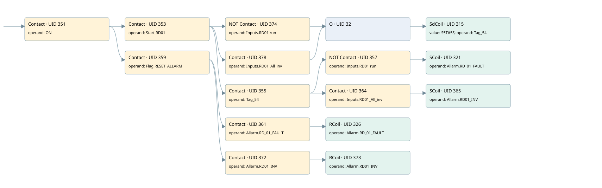

rd01
allarms 1 · 검색 색인 순서 7 · 원본 내부 NID 추정 8
백업 PLF 원본의 3038265 바이트 위치에서 복원한 XML. 검색 문서 1787의 객체 키 161022005962000000000000와 연결했다. 이름 해석 16/16개. 남은 RefId는 상수 또는 미해석 참조다.
연결 구조 다시 그리기
원본 Part/PCon/Wire를 이용한 연결도다. TIA 화면의 래더 배치 또는 실행 결과를 재현한 그림은 아니다. 핀 연결은 아래 표와 원본 XML을 기준으로 읽는다. 노드 위에 마우스를 두면 피연산자 이름을 볼 수 있다.

접점·코일·블록과 피연산자
| Part UID | Gate | Negated 핀 | 연결 피연산자 |
|---|---|---|---|
| 351 | Contact | operand = ON | |
| 353 | Contact | operand = Start RD01 | |
| 374 | Contact | operand | operand = Inputs.RD01 run |
| 378 | Contact | operand = Inputs.RD01_All_inv | |
| 32 | O | ||
| 315 | SdCoil | value = S5T#5S; operand = Tag_54 | |
| 355 | Contact | operand = Tag_54 | |
| 357 | Contact | operand | operand = Inputs.RD01 run |
| 321 | SCoil | operand = Allarm.RD_01_FAULT | |
| 364 | Contact | operand = Inputs.RD01_All_inv | |
| 365 | SCoil | operand = Allarm.RD01_INV | |
| 359 | Contact | operand = Flag.RESET_ALLARM | |
| 361 | Contact | operand = Allarm.RD_01_FAULT | |
| 326 | RCoil | operand = Allarm.RD_01_FAULT | |
| 372 | Contact | operand = Allarm.RD01_INV | |
| 373 | RCoil | operand = Allarm.RD01_INV |
접점 경로를 펼친 조건식
Contact·O/A·비교기의 원본 연결을 읽기 쉽게 펼친 보조 해석이다. POWER는 전원 레일 시작을 뜻한다. 호출 블록·에지·타이머의 내부 동작과 다중 쓰기 순서는 이 표로 실행 검증하지 않았다. 미해석 핀과 RefId는 원문 연결표에서 확인한다.
| UID | 동작 | 대상 | 원본 접점 경로 | 내용 |
|---|---|---|---|---|
| 315 | SdCoil | Tag_54 | (((ON AND Start RD01) AND NOT [Inputs.RD01 run]) OR ((ON AND Start RD01) AND Inputs.RD01_All_inv)) | 시간 동작 SdCoil; 타이머 의미 추가 확인 / 시간 인자 S5T#5S |
| 321 | SCoil | Allarm.RD_01_FAULT | (((ON AND Start RD01) AND Tag_54) AND NOT [Inputs.RD01 run]) | 조건 성립 시 Set |
| 365 | SCoil | Allarm.RD01_INV | (((ON AND Start RD01) AND Tag_54) AND Inputs.RD01_All_inv) | 조건 성립 시 Set |
| 326 | RCoil | Allarm.RD_01_FAULT | ((ON AND Flag.RESET_ALLARM) AND Allarm.RD_01_FAULT) | 조건 성립 시 Reset |
| 373 | RCoil | Allarm.RD01_INV | ((ON AND Flag.RESET_ALLARM) AND Allarm.RD01_INV) | 조건 성립 시 Reset |
원본 배선 연결
| Wire UID | 동일 Wire 연결 끝점 |
|---|---|
| 363 | Powerrail {} ↔ Part 351.in |
| 337 | ORef 327 (ON) ↔ Part 351.operand |
| 352 | Part 351.out ↔ Part 353.in ↔ Part 359.in |
| 338 | ORef 328 (Start RD01) ↔ Part 353.operand |
| 354 | Part 353.out ↔ Part 374.in ↔ Part 378.in ↔ Part 355.in |
| 377 | ORef 375 (Inputs.RD01 run) ↔ Part 374.operand |
| 23 | Part 374.out ↔ Part 32.in1 |
| 381 | ORef 379 (Inputs.RD01_All_inv) ↔ Part 378.operand |
| 33 | Part 378.out ↔ Part 32.in2 |
| 34 | Part 32.out ↔ Part 315.in |
| 339 | ORef 329 (S5T#5S) ↔ Part 315.value |
| 340 | ORef 330 (Tag_54) ↔ Part 315.operand |
| 341 | ORef 331 (Tag_54) ↔ Part 355.operand |
| 21 | Part 355.out ↔ Part 357.in ↔ Part 364.in |
| 342 | ORef 332 (Inputs.RD01 run) ↔ Part 357.operand |
| 358 | Part 357.out ↔ Part 321.in |
| 344 | ORef 333 (Allarm.RD_01_FAULT) ↔ Part 321.operand |
| 30 | ORef 31 (Inputs.RD01_All_inv) ↔ Part 364.operand |
| 29 | Part 364.out ↔ Part 365.in |
| 371 | ORef 367 (Allarm.RD01_INV) ↔ Part 365.operand |
| 346 | ORef 334 (Flag.RESET_ALLARM) ↔ Part 359.operand |
| 22 | Part 359.out ↔ Part 361.in ↔ Part 372.in |
| 347 | ORef 335 (Allarm.RD_01_FAULT) ↔ Part 361.operand |
| 362 | Part 361.out ↔ Part 326.in |
| 349 | ORef 336 (Allarm.RD_01_FAULT) ↔ Part 326.operand |
| 24 | ORef 25 (Allarm.RD01_INV) ↔ Part 372.operand |
| 26 | Part 372.out ↔ Part 373.in |
| 27 | ORef 28 (Allarm.RD01_INV) ↔ Part 373.operand |
식별자 해석 근거 16개
| ORef UID | RefId | 이름 | IdentXmlPart 파일 | 해석 방법 |
|---|---|---|---|---|
| 327 | 1 | ON | 0658-IdentXmlPart.xml | UID/RID + search-text + NID agreement |
| 328 | 38 | Start RD01 | 0658-IdentXmlPart.xml | UID/RID + search-text + NID agreement |
| 375 | 268 | Inputs.RD01 run | 0657-IdentXmlPart.xml | UID/RID + search-text + NID agreement |
| 379 | 270 | Inputs.RD01_All_inv | 0657-IdentXmlPart.xml | UID/RID + search-text + NID agreement |
| 330 | 39 | Tag_54 | 0658-IdentXmlPart.xml | UID/RID + search-text + NID agreement |
| 329 | 175 | S5T#5S | 0656-IdentXmlPart.xml | literal candidate: UID/RID/NID + nearby named declarations + search-text agreement |
| 331 | 39 | Tag_54 | 0658-IdentXmlPart.xml | UID/RID + search-text + NID agreement |
| 332 | 268 | Inputs.RD01 run | 0657-IdentXmlPart.xml | UID/RID + search-text + NID agreement |
| 333 | 41 | Allarm.RD_01_FAULT | 0657-IdentXmlPart.xml | UID/RID + search-text + NID agreement |
| 31 | 270 | Inputs.RD01_All_inv | 0657-IdentXmlPart.xml | UID/RID + search-text + NID agreement |
| 367 | 210 | Allarm.RD01_INV | 0657-IdentXmlPart.xml | UID/RID + search-text + NID agreement |
| 334 | 13 | Flag.RESET_ALLARM | 0657-IdentXmlPart.xml | UID/RID + search-text + NID agreement |
| 335 | 41 | Allarm.RD_01_FAULT | 0657-IdentXmlPart.xml | UID/RID + search-text + NID agreement |
| 336 | 41 | Allarm.RD_01_FAULT | 0657-IdentXmlPart.xml | UID/RID + search-text + NID agreement |
| 25 | 210 | Allarm.RD01_INV | 0657-IdentXmlPart.xml | UID/RID + search-text + NID agreement |
| 28 | 210 | Allarm.RD01_INV | 0657-IdentXmlPart.xml | UID/RID + search-text + NID agreement |
검색 코드 보조 자료
참조 명칭을 찾기 위한 자료이며 실행 순서나 AND/OR 관계는 위 연결표로 확인한다.
"on" "start rd01" "inputs"."rd01 run" "tag_54" s5t#5s "flag".reset_allarm "allarm".rd_01_fault "allarm".rd_01_fault "allarm".rd01_inv "allarm".rd01_inv "inputs".rd01_all_inv "tag_54" "inputs"."rd01 run" "allarm".rd_01_fault "inputs".rd01_all_inv "allarm".rd01_inv